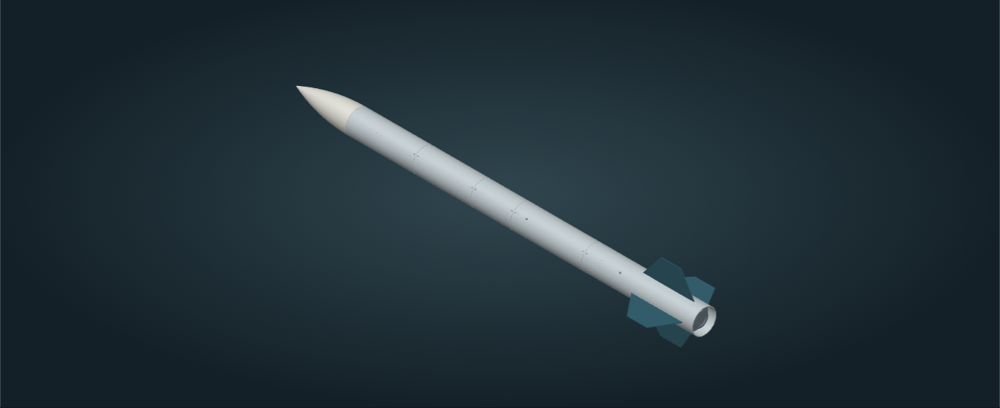
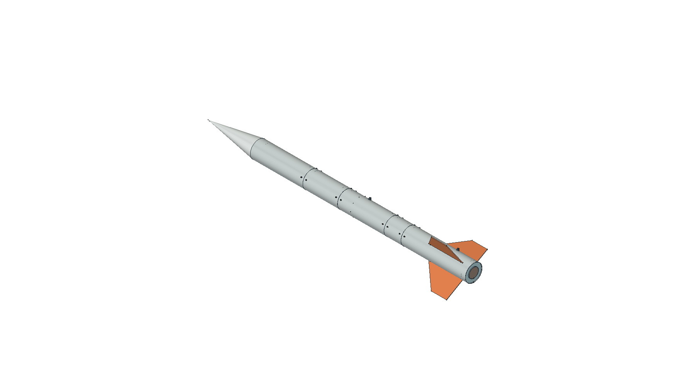

ГИРД · ИНТЕРАКТИВНЫЕ МОДЕЛИ
От идеи
к форме.
Исследуйте ракеты снаружи и изнутри: вращайте модели, открывайте разрезы, изучайте электронику и устройство отдельных узлов.
Смотреть модели ↓01 / МЛАДШИЙ ГИРД
Н1 R02
Облегчённая версия: уточнённые стыки, крепёж, панели и проводка. Полный интерактивный просмотр с разрезом, полезной нагрузкой и электроникой.
XVI сезон · 2026–2027
Открыть 3D-модель Н1 →


02 / СТАРШИЙ ГИРД
Н2 R02
Облегчённая самостоятельная компоновка: уточнённые стабилизаторы, два сервисных люка и подробная электроника. Сечения, взрыв-схема, внутренние узлы и демонстрационные состояния спасения.
XVI сезон · 2026–2027
Открыть 3D-модель Н2 →
03 / СУПЕР ГИРД
Н3 R01
Самостоятельная платформа: огивальный обтекатель, отдельный измерительный отсек, четыре вычислительных яруса и съёмное питание. 392 детали носителя, МГМ Высшей лиги и отдельная наземная станция. 23 режима просмотра.
XVI сезон · 2026–2027 · проектные допущения обозначены
Открыть 3D-модель Н3 →
04 / АРХИВ КОНЦЕПЦИЙ
SG1 D01
Внешний вид предыдущей исследовательской платформы: конический обтекатель, вытянутый корпус и три стабилизатора.
Архивная цифровая модель

В галерее представлены цифровые модели. Изображения не подтверждают результаты лётных испытаний.